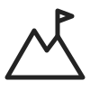

MATCHBOOK LEARNING · MORNING MEETING
MATCHBOOK LEARNING · MORNING MEETINGShow-Me Cards · Tarjetas para mostrar
Cut on the lines. Students hold up a card during Connect · Share so every student answers at the same time, with or without speaking.
 I agreeEstoy de acuerdo
I agreeEstoy de acuerdo I want to add onQuiero agregar
I want to add onQuiero agregar I need more timeNecesito más tiempo
I need more timeNecesito más tiempoMy Reset Rep
Name: _____________________


Students: Privately pick the place where you actually slip. Write one rep: setting, action, and why it matters.
Estudiantes: En privado, elige el lugar donde de verdad fallas. Escribe una repetición: lugar, acción y por qué importa.
My commitment: In ___, I will ___ so that ___.
En ___, voy a ___ para que ___.
Family chat: What helps you get back into a routine after time off?
Charla en familia: ¿Qué te ayuda a volver a una rutina después de tiempo libre?
Point, say, draw, dictate, or write.
Test-Day Game Plan
Name: _____________________

Students: Do two rounds of slow breathing together. Write your game plan: before, during, and after.
Estudiantes: Haz dos rondas de respiración lenta juntos. Escribe tu plan: antes, durante y después.
My commitment: If I freeze on a question, my move is…
Si me congelo en una pregunta, mi movimiento es…
Family chat: What do you do to get your head right before something big?
Charla en familia: ¿Qué haces para prepararte mentalmente antes de algo grande?
Point, say, draw, dictate, or write.
One Standard
Name: _____________________
Students: Rate your consistency across your classes and transitions. Pick the one place your standard drops and write your fix.
Estudiantes: Califica tu constancia en tus clases y transiciones. Elige el lugar donde baja tu nivel y escribe cómo arreglarlo.
My commitment: The place my standard drops is ___. My fix is ___.
El lugar donde baja mi nivel es ___. Mi solución es ___.
Family chat: Who do you act the same around, no matter what?
Charla en familia: ¿Con quién actúas igual, pase lo que pase?
Point, say, draw, dictate, or write.
The Last Mile
Name: _____________________


Students: Explain in one sentence how effort changes the brain. Write your finish-strong plan for the rest of the week.
Estudiantes: Explica en una oración cómo el esfuerzo cambia el cerebro. Escribe tu plan para terminar la semana con fuerza.
My commitment: This week, I will finish strong by…
Esta semana, voy a terminar con fuerza al…
Family chat: Who do you know that finishes what they start? How do they do it?
Charla en familia: ¿A quién conoces que termina lo que empieza? ¿Cómo lo hace?
Point, say, draw, dictate, or write.